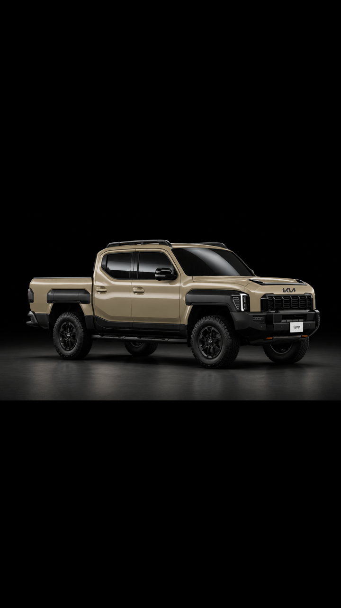

<!doctype html><html lang="es"><meta charset="utf-8"><meta name="viewport" content="width=device-width,initial-scale=1,viewport-fit=cover"><link rel="icon" href="media/kia-logo.svg" type="image/svg+xml"><meta name="theme-color" content="#050808"><title>Kia Tasman · Explora lo que te mueve</title><link rel="preload" as="font" href="fonts/KiaSignatureRegular-latin.woff2" type="font/woff2" crossorigin><link rel="preload" as="font" href="fonts/KiaSignatureLight-latin.woff2" type="font/woff2" crossorigin><link rel="preload" as="image" href="media/master.webp"><link rel="stylesheet" href="explorer.css?v=20261116-r6"><link rel="stylesheet" href="experience.css?v=20261116-r6">
<section id="splash" aria-label="Kia Ecuador" role="status"><div class="splash-content"><h1>Kia Ecuador</h1><p>Explora lo que te mueve.</p></div><p class="splash-sound-hint">Sonido opcional · toca para activar</p></section>
<main id="campaign" inert><header><span class="brand-note">EXPERIENCIA</span><button id="sound" aria-pressed="false" aria-label="Silenciar sonido">Sonido ON</button></header><section id="scene"><video id="film" playsinline preload="none" poster="media/opening.webp?v=20261116-r6"></video><div id="explorer" hidden><section class="stage"><canvas id="car" width="720" height="1280" tabindex="0" aria-label="Desliza para girar la camioneta; pellizca para acercar o alejar"></canvas><div id="loading" role="status"></div><p id="detail" aria-live="polite">Desliza para girar</p></section></div><button id="back" hidden>Estudio</button><button id="skip" hidden>Saltar intro</button><button id="pause" hidden>Pausar</button></section><section id="panel" aria-live="polite"></section><p id="status" role="status"></p><footer><a href="https://www.kia.com/ec/main.html" target="_blank" rel="noopener">Kia Ecuador</a></footer></main><script type="module" src="experience.js?v=20261116-r6"></script></html>
